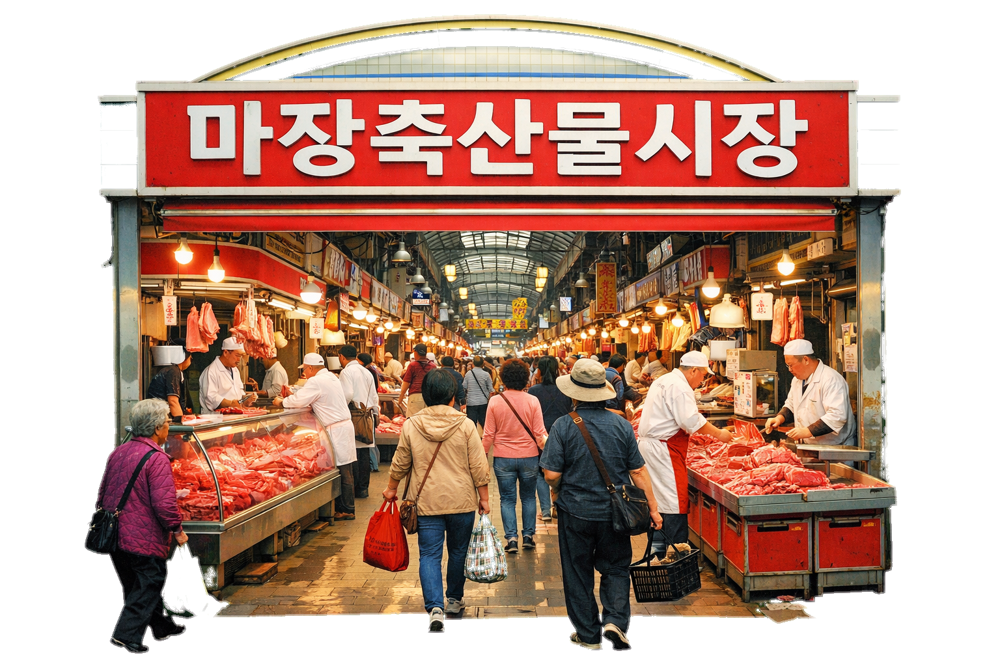

마장 축산물시장 완전 정복 가이드:
성동구 골목의 맛과 즐길 거리
수도권 육류 유통의 중심 성동구 마장 축산물시장에서 신선한 한우·한돈 고르는 법, 상차림 식당 이용료, 주차 및 택배 팁을 확인하세요.

1. 도축에서 식탁까지, 60년 역사의 한우 유통 중심지
1960년대 도축장 인접 유통 단지로 출발한 마장 축산물시장은 현재 2,000여 개의 축산 관련 점포가 모여 수도권 육류 유통의 절반 가까이를 책임지는 거대한 미식 타운입니다. 유통 단계가 짧아 일반 백화점이나 대형 마트에 비해 20~30%가량 합리적인 가격으로 1++ 등급 한우와 신선한 돼지고기, 특수부위를 만날 수 있습니다.
특히 평일·주말 가리지 않고 육즙 가득한 한우를 맛보려는 미식가들과 캠핑용 고기를 사러 오는 방문객들로 시장 골목은 늘 활기가 넘칩니다.
2. 정육점 직구매 + 상차림 식당 100% 성공 팁
마장시장을 처음 방문한다면 서문이나 북문 메인 통로를 따라 걸으며 여러 정육점의 진열 상태를 비교해 보는 것이 좋습니다. 마블링이 고르고 육색이 선명한 한우 모둠(등심·채끝·부채살·업진살 등)을 인원수와 예산에 맞춰 달라고 요청하면 즉석에서 깔끔하게 썰어 포장해 줍니다.
구매한 고기를 바로 구워 먹고 싶다면 정육점 2층에 연계된 숯불구이 식당이나 시장 내 상차림 전문 식당으로 이동하면 됩니다. 보통 1인당 4,000원~6,000원 수준의 상차림비(참숯, 쌈 채소, 기본 반찬 포함)만 내면, 고기 외에 된장찌개나 냉면 등 식사류도 함께 주문해 푸짐한 만찬을 즐길 수 있습니다.
3. 먹자골목 소갈비살 & 청계천 산책 코스
직접 정육점을 고르는 것이 번거롭다면 시장 서쪽 '마장동 먹자골목'으로 향하는 것도 방법입니다. 이곳에는 연탄이나 참숯에 갓 썬 생소갈비살과 안창살을 구워주는 수십 년 전통의 노포 구이집들이 모여 있어 혼자 또는 둘이 가볍게 한 잔 기울이기에 좋습니다. 식사 후에는 시장 바로 앞 청계천 산책로를 따라 걸으며 소화도 시키고 서울의 야경을 즐겨보세요.
한눈에 보는 방문 핵심 정보
| 위치 · 지하철 | 서울 성동구 마장로33길 53 · 5호선 마장역 2번 출구 / 2호선 용두역 4번 출구 |
|---|---|
| 영업시간 | 정육점 08:00 ~ 21:00 / 먹자골목·상차림 식당 11:00 ~ 22:30 |
| 정기 휴무 | 시장 전체 연중무휴 (개별 정육점·식당별 첫째·셋째 일요일 휴무 상이) |
| 이용 형태 | 1층 정육점 고기 직구매(모둠 100g당 부위별 시세) + 2층·인근 숯불구이 상차림 식당 |
| 추천 메뉴 | 한우 꽃등심·살치살·새우살 모둠, 당일 도축 육회·육사시미, 특수부위 소갈비살 |
마장 축산물시장 맛 기행 코스
- 오후 4시 · 용두역 4번 출구 하차 후 시장 탐색: 청계천 고산자교를 건너 시장 북문으로 진입해 여러 정육점의 한우·육회 구성을 둘러봅니다.
- 오후 5시 · 한우 모둠 구매 및 2층 숯불구이 식사: 취향에 맞는 부위와 육회를 고른 뒤 연계 식당에서 참숯에 구워 먹습니다.
- 오후 7시 · 청계천 마장동 구간 산책: 식사 후 청계천 산책길을 따라 왕십리나 신설동 방향으로 가볍게 걸으며 하루를 마무리합니다.
자주 묻는 질문 (FAQ)
Q. 먹기 직전에 고기를 사면 상차림 식당 자리가 없을 수도 있나요?
금요일 저녁과 주말 오후 6~7시는 매우 붐빕니다. 정육점 주인에게 바로 구워 먹을 곳 자리 여부를 먼저 물어보고 연계 식당을 안내받으면 대기 시간을 크게 줄일 수 있습니다.
Q. 선물용 한우 세트나 캠핑용 진공 포장도 가능한가요?
네, 거의 모든 정육점에서 아이스팩 보냉 진공 포장과 전국 택배 서비스를 즉시 제공하므로 나들이나 선물 구매에도 편리합니다.